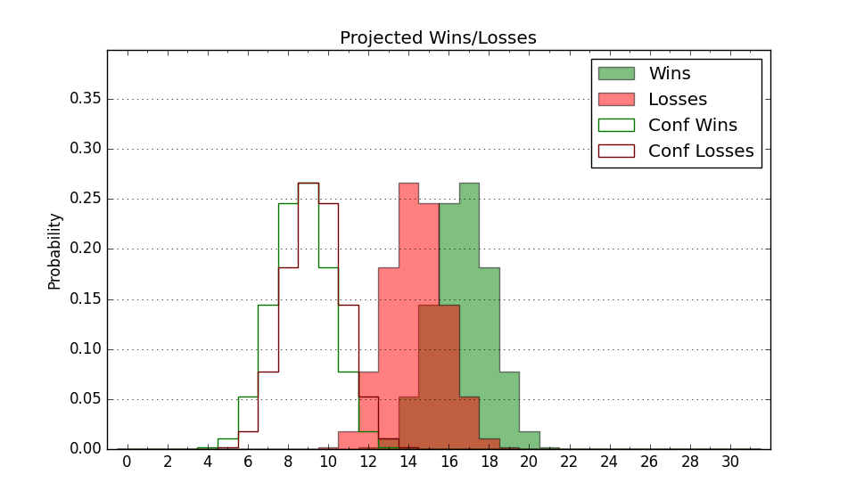

| Home | Game Probabilities | Conferences | Preseason Predictions | Odds Charts | NCAA Tournament |
| City: | Boston, Massachusetts | |
| Conference: | Colonial (9th)
| |
| Record: | 3-5 (Conf) 11-10 (Overall) | |
| Ratings: | Comp.: -3.9 (207th) Net: -3.8 (209th) Off: 102.6 (221st) Def: 106.4 (190th) SoR: 0.0 (144th) |
| Remaining | ||||||
|---|---|---|---|---|---|---|
| Date | Opponent | Win Prob | Pred. | |||
| 1/30 | @ Hampton (260) | 48.4% | L 69-70 | |||
| 2/1 | @ Elon (144) | 23.2% | L 66-74 | |||
| 2/6 | @ Hofstra (174) | 29.2% | L 61-67 | |||
| 2/8 | Hampton (260) | 76.1% | W 73-65 | |||
| 2/13 | Campbell (227) | 69.7% | W 73-67 | |||
| 2/15 | Stony Brook (350) | 90.8% | W 79-64 | |||
| 2/20 | College of Charleston (147) | 52.1% | W 77-76 | |||
| 2/22 | @ Monmouth (282) | 53.1% | W 72-71 | |||
| 2/27 | North Carolina A&T (328) | 87.2% | W 85-71 | |||
| 3/1 | @ William & Mary (211) | 35.4% | L 78-83 | |||
| Previous | Game Score | |||||
| Date | Opponent | Win Prob | Result | Off | Def | Net |
| 11/4 | @Boston University (311) | 60.2% | W 80-72 | 18.2 | -9.9 | 8.3 |
| 11/10 | Princeton (143) | 50.4% | L 76-79 | -3.4 | -5.0 | -8.4 |
| 11/13 | Harvard (279) | 79.1% | W 78-56 | -0.7 | 17.5 | 16.9 |
| 11/16 | (N) Central Connecticut (204) | 49.7% | W 80-62 | 13.7 | 7.8 | 21.5 |
| 11/22 | (N) FIU (246) | 59.5% | W 60-58 | -14.2 | 10.9 | -3.3 |
| 11/23 | @Florida Gulf Coast (149) | 24.2% | W 59-55 | -1.9 | 25.7 | 23.9 |
| 11/24 | (N) Cal St. Bakersfield (239) | 58.0% | L 60-68 | -13.6 | 6.0 | -7.5 |
| 11/30 | @Vermont (257) | 47.1% | L 64-68 | -6.0 | -1.8 | -7.8 |
| 12/3 | La Salle (193) | 62.0% | W 82-68 | 2.9 | 12.5 | 15.4 |
| 12/8 | Colgate (214) | 66.1% | W 78-75 | 3.3 | -6.2 | -2.9 |
| 12/15 | @Old Dominion (335) | 68.7% | W 75-71 | -0.6 | -1.4 | -2.0 |
| 12/18 | @Massachusetts (199) | 33.0% | L 72-77 | -7.6 | 6.7 | -0.9 |
| 12/29 | @Northwestern (47) | 5.7% | L 60-85 | 3.9 | -16.3 | -12.4 |
| 1/2 | Delaware (235) | 71.2% | W 80-77 | 2.7 | -4.4 | -1.7 |
| 1/4 | Hofstra (174) | 58.5% | L 37-55 | -43.1 | 9.1 | -34.0 |
| 1/9 | @Towson (185) | 30.9% | L 73-80 | 18.5 | -25.4 | -6.9 |
| 1/11 | @Stony Brook (350) | 74.4% | W 70-66 | -8.7 | 5.9 | -2.7 |
| 1/16 | @UNC Wilmington (118) | 19.1% | L 72-80 | 10.7 | -6.1 | 4.5 |
| 1/18 | @College of Charleston (147) | 24.2% | L 85-87 | 15.6 | -9.9 | 5.7 |
| 1/23 | Drexel (197) | 62.3% | W 70-61 | 13.4 | -4.1 | 9.3 |
| 1/27 | Towson (185) | 60.3% | L 65-75 | -5.6 | -9.2 | -14.8 |
| Stats & Trends | |||||
|---|---|---|---|---|---|
| Current | Day | Week | Month | Season | |
| Composite | -3.9 | -0.6 | -0.3 | -2.5 | +2.5 |
| Comp Rank | 207 | -2 | -8 | -36 | +18 |
| Net Efficiency | -3.8 | -0.7 | -0.4 | -3.6 | -- |
| Net Rank | 209 | -6 | -8 | -48 | -- |
| Off Efficiency | 102.6 | -0.2 | +0.1 | +1.7 | -- |
| Off Rank | 221 | -2 | +2 | +21 | -- |
| Def Efficiency | 106.4 | -0.5 | -0.5 | -5.3 | -- |
| Def Rank | 190 | -8 | -9 | -78 | -- |
| SoS Rank | 284 | -6 | -10 | +59 | -- |
| Exp. Wins | 16.7 | -0.7 | -0.3 | -2.4 | +1.5 |
| Exp. Conf Wins | 8.7 | -0.7 | -0.3 | -2.3 | -0.5 |
| Conf Champ Prob | 0.1 | -0.7 | -0.9 | -14.5 | -5.2 |

| Advanced Stats | ||
|---|---|---|
| Stat | Value | Rank |
| Off Eff FG % | 0.508 | 168 |
| Off Ast Ratio | 0.144 | 181 |
| Off ORB% | 0.317 | 108 |
| Off TO Rate | 0.172 | 318 |
| Off FT Ratio | 0.289 | 298 |
| Def Eff FG % | 0.523 | 232 |
| Def Ast Ratio | 0.151 | 219 |
| Def ORB% | 0.279 | 152 |
| Def TO Rate | 0.146 | 195 |
| Def FT Ratio | 0.336 | 192 |